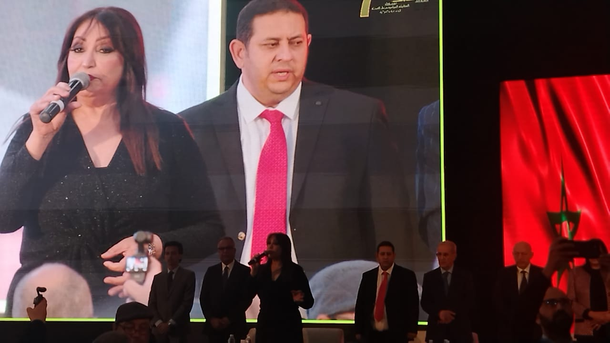
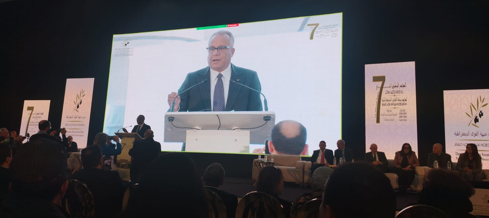
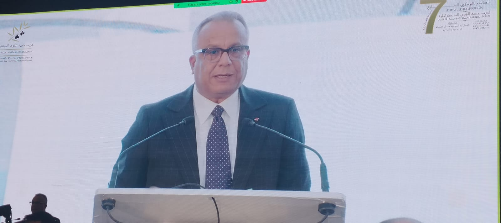
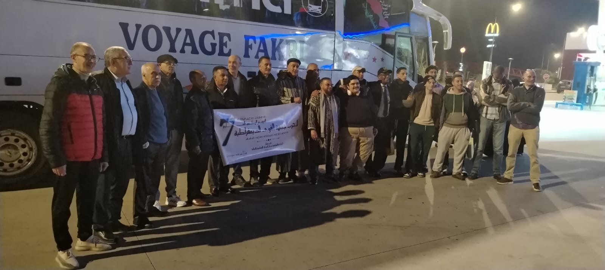

خلال المؤتمر الوطني لحزب جبهة القوى الديمقراطية، يشكّل هذا الحدث محطة تنظيمية وسياسية بارزة في مسار الحزب، حيث يجتمع المناضلون والمناضلات من مختلف الجهات لتقييم المرحلة السابقة واستشراف آفاق العمل المستقبلي.



كما يشكّل المؤتمر فضاءً للنقاش الديمقراطي حول القضايا الوطنية الراهنة، وعلى رأسها الأوضاع الاجتماعية والاقتصادية، وتحديات غلاء المعيشة، وآفاق الاستحقاقات الانتخابية المقبلة، إضافة إلى سبل تجديد الخطاب السياسي وتعزيز حضور الحزب في المشهد الوطني.
ومن بين المحطات الأساسية كذلك، انتخاب قيادة جديدة أو تجديد الثقة في القيادة الحالية، بما يعكس إرادة المؤتمرين في ضخ دماء جديدة وتقوية الهياكل التنظيمية للحزب. ويختتم المؤتمر أشغاله بالمصادقة على التوصيات والقرارات التي ترسم ملامح المرحلة المقبلة، وتؤكد التزام الحزب بقيم الديمقراطية، والعدالة الاجتماعية، وثقافة التعايش، وخدمة قضايا المواطن.